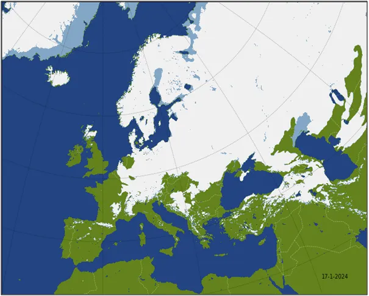
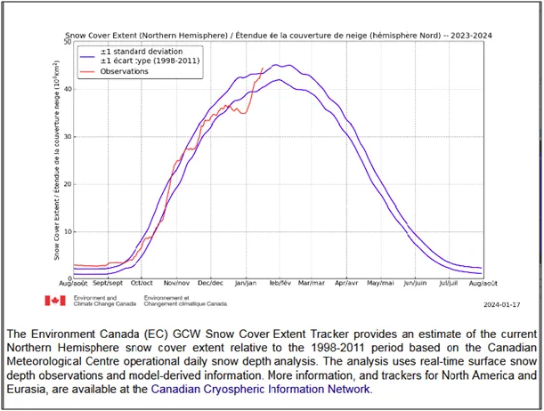
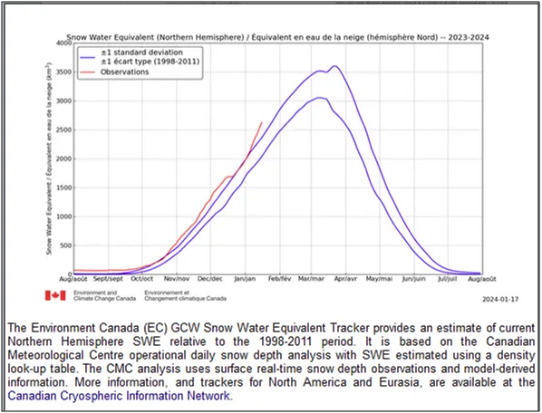

Bitwa przegrana, upadek ministra i rozumu na całej linii.
Krym i tureckie wybrzeże Morza Czarnego pod śniegiem. Na pierwszym wykresie zasięg pokrywy śnieżnej, a na drugim ilość wody uwięzionej w śniegu na północnej półkuli. Oba wskaźniki ponad granicami odchylenia standardowego, czyli idziemy na rekord. W zeszłym roku było mniej śniegu a wiosna była bardzo opóźniona.
W kwietniu i maju wiało suchym zimnym powietrzem z północy i nie dotarły do Polski ciepłe deszcze z południa.

To możliwy scenariusz, bo gruby biały śnieg odbija całe promieniowanie słoneczne i wiosna nie ma lokalnych przyczółków, aby nagrzewać grunt i od niego powietrze. Po sporych dostawach w Ameryce teraz prognozy pokazują mnóstwo nowego śniegu w Azji. Bałkany też będą zasypane intensywnie, czyli żarty się skończyły. Turcja już ma problem z powodziami, a jesteśmy dopiero w 1/3 sezonu powstawania śnieżnej pokrywy.


Tak to "globalne ocieplenie" zmienia się w globalne oziębienie. Nasza planeta ma wiele mechanizmów samoregulacji, podgrzanie oceanów w okresach, gdy jest mniej chmur z opóźnieniem powoduje wysyłanie ciepłego wilgotnego powietrza w obszary polarne, a tam w postaci gęstych chmur i śniegu łagodzi arktyczny klimat nie pozwalając na ekstremalne wychłodzenie podczas długich zimowych nocy. Tymczasem Minister Klimatu i Ogłupiania Ludu ze swą świtą pobiera gigantyczne wynagrodzenia za wróżenie z fusów. Upadek rozumu na całej linii.
Paweł Klimczewski